# Tema personalizado
blank_theme <- function(aspect.ratio = 1/1.61){
theme(panel.grid.minor = element_blank(),
panel.grid.major = element_blank(),
panel.background = element_blank(),
axis.line = element_blank(),
aspect.ratio = aspect.ratio,
axis.ticks = element_blank(),
text = element_text(colour = "gray50"), # Eliminar
legend.position = "none"
)
}La probabilidad de encontrarnos con al menos un error de tipo 1 al realizar múltiples comparaciones independientes incrementa a una tasa de \(1-(1-\alpha)^m\), donde m es el número de comparaciones. Grafiquemos este cambio:
library(ggplot2)
error <- data.frame(m = 1:20)
error["P_alpha"] <- 1 - (1-0.05)^error$m
error.rate <- ggplot(data = error, aes(m, P_alpha)) +
geom_line(color = rgb(118,78,144, maxColorValue = 255)) +
scale_y_continuous(breaks = NULL) +
scale_x_continuous(breaks = c(1, 2, 5, 10, 20)) +
expand_limits(y = c(0,1)) +
blank_theme() +
geom_hline(yintercept = 0.05, colour = "deepskyblue4", linetype = "dashed") +
geom_hline(yintercept = 0.5, colour = "firebrick", linetype = "dashed", alpha = 0.5) +
geom_hline(yintercept = 1, colour = "firebrick", linetype = "dashed", alpha = 0.5) +
annotate("text", x = 0, y = 0.08, label = "0.05", colour = "deepskyblue4", alpha = 0.5) +
annotate("text", x = 0, y = 0.53, label = "0.5", colour = "firebrick", alpha = 0.5) +
annotate("text", x = 0, y = 0.97, label = "1", colour = "firebrick", alpha = 0.5) +
labs(title = "P(error) al incrementar el número de pruebas (m)",
subtitle = bquote({1 - (1- alpha)^m}),
x = element_blank(),
y = element_blank(),
caption = "King & Eckersley (2019)"
)
error.rate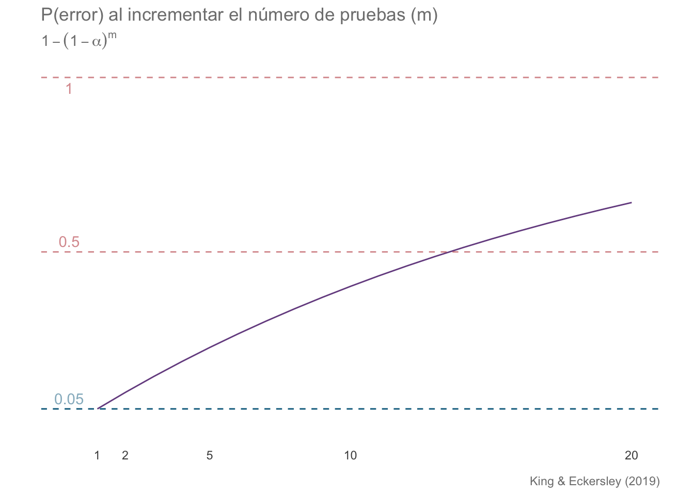
Ahora apliquemos la corrección de Bonferroni, dada por \(\alpha/m\), de modo que la ecuación anterior queda formulada como: \(1-(1-\alpha/m)^m\)
error["P_bonf"] <- 1 - (1-(0.05/error$m))^error$m
error.corr <- ggplot(data = error, aes(m, P_bonf)) +
geom_line(color = rgb(118,78,144, maxColorValue = 255)) +
scale_y_continuous(breaks = NULL) +
scale_x_continuous(breaks = c(1, 2, 5, 10, 20)) +
expand_limits(y = c(0.04, 0.06)) +
blank_theme() +
geom_hline(yintercept = 0.05, colour = "deepskyblue4", linetype = "dashed") +
geom_hline(yintercept = 0.04, colour = "lightslategray", linetype = "dashed", alpha = 0.5) +
geom_hline(yintercept = 0.06, colour = "lightslategray", linetype = "dashed", alpha = 0.5) +
annotate("text", x = 0, y = 0.0505, label = "0.05", colour = "deepskyblue4", alpha = 0.5) +
annotate("text", x = 0, y = 0.0405, label = "0.04", colour = "lightslategray", alpha = 0.5) +
annotate("text", x = 0, y = 0.0595, label = "0.06", colour = "lightslategray", alpha = 0.5) +
labs(title = "P(error) al corregir según el número de pruebas (m)",
subtitle = bquote({1 - (1- (alpha/m))^m}),
x = element_blank(),
y = element_blank(),
caption = "King & Eckersley (2019)"
)
error.corr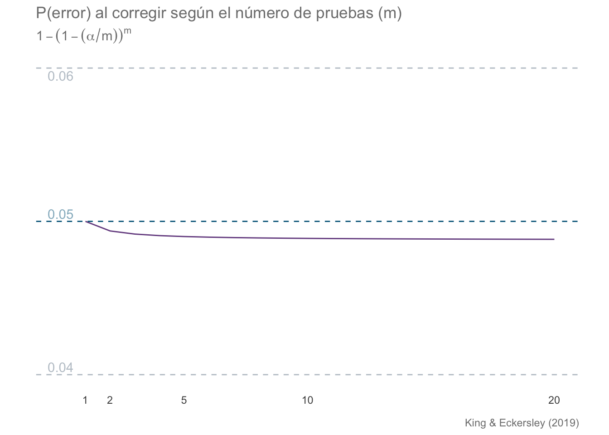
set.seed(45)
n <- 1000
robs <- data.frame(z = rnorm(n))
robs["color"] <- ifelse(robs$z < -1.96 | robs$z > 1.96, "firebrick", "deepskyblue4")
robs.plot <- ggplot(data = robs, aes(z)) +
geom_density(color = "deepskyblue4") +
blank_theme() +
labs(title = "Observaciones aleatorias a un nivel de significancia de 0.05",
subtitle = "Bandas indican límites del LS ",
caption = paste(n, " datos simulados"),
x = "Z",
y = element_blank()
) +
geom_vline(xintercept = -1.96,
colour = rgb(118,78,144, maxColorValue = 255),
linetype = "dashed"
) +
geom_vline(xintercept = 1.96,
colour = rgb(118,78,144, maxColorValue = 255),
linetype = "dashed"
) +
geom_point(aes(x = z, y = 0),
color = robs$color, alpha = 0.3) +
scale_y_continuous(breaks = NULL) +
scale_x_continuous(breaks = c(-3, -1.96, -1, 0, 1, 1.96, 3),
labels = as.character(c(-3, -1.96, -1, 0, 1, 1.96, 3))
) +
annotate("text", x = 3, y = 0.5,
label = paste("# sign = ",
length(robs$color[robs$color == "firebrick"]), "/", n),
colour = "firebrick"
)
robs.plot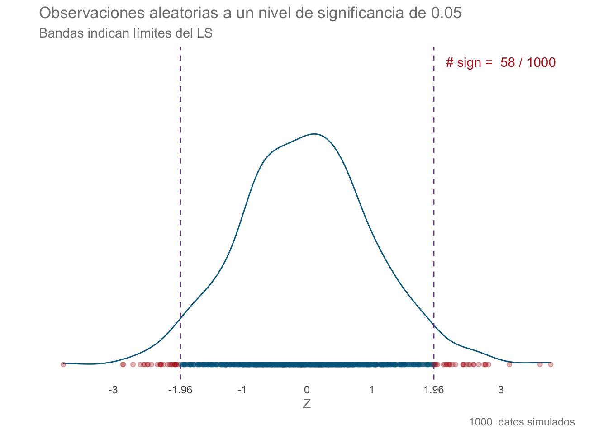
set.seed(45)
n <- 1000
a.corr <- (0.05/n)/2
sig.lev <- abs(qnorm(a.corr))
robs <- data.frame(z = rnorm(n))
robs["color"] <- ifelse(robs$z < -sig.lev | robs$z > sig.lev, "firebrick", "deepskyblue4")
rcor.plot <- ggplot(data = robs, aes(z)) +
geom_density(color = "deepskyblue4") +
blank_theme() +
labs(title = "Observaciones aleatorias a un nivel de significancia de 0.05",
subtitle = "Bandas indican límites del LS corregido",
caption = paste(n, " datos simulados"),
x = "Z",
y = element_blank()
) +
geom_vline(xintercept = -sig.lev,
colour = rgb(118,78,144, maxColorValue = 255),
linetype = "dashed"
) +
geom_vline(xintercept = sig.lev,
colour = rgb(118,78,144, maxColorValue = 255),
linetype = "dashed"
) +
geom_point(aes(x = z, y = 0),
color = robs$color, alpha = 0.3) +
scale_y_continuous(breaks = NULL) +
scale_x_continuous(breaks = c(-3, -1.96, -1, 0, 1, 1.96, 3),
labels = as.character(c(-3, -1.96, -1, 0, 1, 1.96, 3))
) +
annotate("text", x = 2.5, y = 0.5,
label = paste("# sign = ",
length(robs$color[robs$color == "firebrick"]), "/", n),
colour = "firebrick"
)
rcor.plot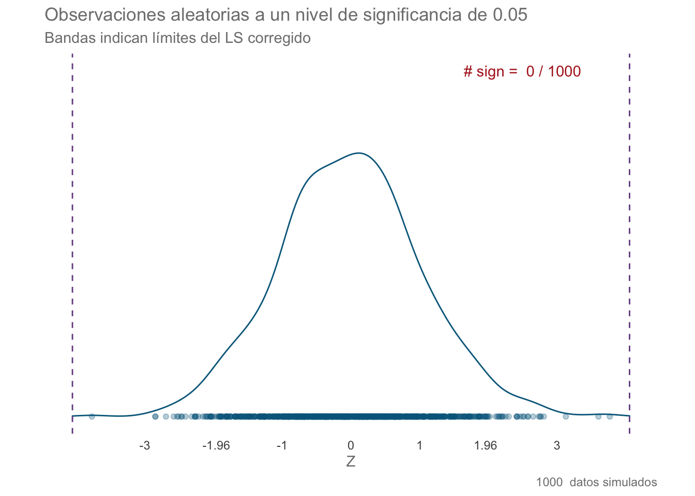
Carguemos los datos
mili <- read.csv("data/milipedos.csv")
colnames(mili) <- c("Especie", "Sexo", "Ala")
str(mili)## 'data.frame': 24 obs. of 3 variables:
## $ Especie: chr "Especie1" "Especie1" "Especie1" "Especie1" ...
## $ Sexo : chr "Machos" "Machos" "Machos" "Machos" ...
## $ Ala : num 21.5 19.6 20.9 22.8 14.8 15.6 13.5 16.4 14.5 17.4 ...Realicemos la prueba de normalidad para cada nivel de cada variable:
norm.mili <- data.frame(grupo = NA, n = NA, W = NA, p = NA)
cols <- colnames(mili)[1:2]
especies <- as.character(unique(mili$Especie))
sexos <- as.character(unique(mili$Sexo))
for (i in seq_along(cols)) {# Cicla entre las columnas indicadas
if (i == 1) { # Si es la primera columna:
for (j in seq_along(especies)) { # Cicla entre los valores de la columa Especies
shap <- shapiro.test(mili$Ala[mili[cols[i]] == especies[j]])
norm.mili[j,] <- c(especies[j],
length(mili$Ala[mili[cols[i]] == especies[j]]),
round(shap$statistic, 2),
round(shap$p.value, 2)
)
}
}
if (i == 2) { # Si es la segunda columna
for (k in 1:length(sexos)) { # Cicla entre los valores de la columna Sexo
shap <- shapiro.test(mili$Ala[mili[cols[i]] == sexos[k]])
norm.mili[j+k,] <- c(sexos[k], # Sexo de la iteración
length(mili$Ala[mili[cols[i]] == sexos[k]]), # Tamaño de muestra para esa iteración
round(shap$statistic, 2), #
round(shap$p.value, 2)
)
}
}
}
norm.miliComprobemos la homocedasticidad:
# Dado que los datos se ajustaron a una distribución normal podemos utilizar la prueba de Bartlett
bartlett.test(Ala~Sexo, data = mili)##
## Bartlett test of homogeneity of variances
##
## data: Ala by Sexo
## Bartlett's K-squared = 2.8086, df = 1, p-value = 0.09376bartlett.test(Ala~Especie, data = mili)##
## Bartlett test of homogeneity of variances
##
## data: Ala by Especie
## Bartlett's K-squared = 1.0294, df = 2, p-value = 0.5977# Verificamos con la prueba de Levene
library(car)## Loading required package: carData##
## Attaching package: 'car'## The following object is masked from 'package:DescTools':
##
## RecodeleveneTest(Ala~Sexo, data = mili)## Warning in leveneTest.default(y = y, group = group, ...): group coerced to
## factor.leveneTest(Ala~Especie, data = mili)## Warning in leveneTest.default(y = y, group = group, ...): group coerced to
## factor.Realicemos la prueba Scheirer-Ray-Hare:
library(rcompanion)
library(FSA)## ## FSA v0.8.31. See citation('FSA') if used in publication.
## ## Run fishR() for related website and fishR('IFAR') for related book.##
## Attaching package: 'FSA'## The following object is masked from 'package:car':
##
## bootCasescheirerRayHare(Ala ~ Especie + Sexo, data = mili)##
## DV: Ala
## Observations: 24
## D: 0.9995652
## MS total: 50dunnTest(Ala~Especie, data = mili, method = "bonferroni")## Warning: Especie was coerced to a factor.## Dunn (1964) Kruskal-Wallis multiple comparison## p-values adjusted with the Bonferroni method.## Comparison Z P.unadj P.adj
## 1 Especie1 - Especie2 2.2278707 0.02588914 0.07766741
## 2 Especie1 - Especie3 1.2730690 0.20299356 0.60898068
## 3 Especie2 - Especie3 -0.9548017 0.33967797 1.00000000Bajo este criterio, las diferencias parecieran no ser significativas. Apliquemos entonces el ANOVA de dos vías paramétrico y veamos qué encontramos:
res.mili <- aov(Ala~Especie * Sexo, data = mili)
summary(res.mili)## Df Sum Sq Mean Sq F value Pr(>F)
## Especie 2 55.26 27.63 13.082 0.00031 ***
## Sexo 1 138.72 138.72 65.679 2.04e-07 ***
## Especie:Sexo 2 6.89 3.45 1.631 0.22331
## Residuals 18 38.02 2.11
## ---
## Signif. codes: 0 '***' 0.001 '**' 0.01 '*' 0.05 '.' 0.1 ' ' 1¡SORPRESA! Ahora encontramos diferencias en ambos niveles, aunque no se encontró una interacción entre los factores. Realicemos la prueba HSD de Tukey para analizar las diferencias a cada nivel.
TukeyHSD(res.mili)$Especie## diff lwr upr p adj
## Especie2-Especie1 -3.7125 -5.5670304 -1.8579696 0.0002068047
## Especie3-Especie1 -2.0125 -3.8670304 -0.1579696 0.0322559559
## Especie3-Especie2 1.7000 -0.1545304 3.5545304 0.0756330927Veamos ahora estos resultados de manera gráfica utilizando un gráfico de interacción:
inter.plot <- ggplot(data = mili, aes(x = Sexo, y = Ala, color = Sexo)) +
geom_violin() + geom_boxplot(width = 0.1) +
facet_wrap(~Especie) +
blank_theme(1.61) +
labs(title = "Gráfico de interacción de la [Ala] (mg/100 ml) en milípedos",
subtitle = "Especie + Sexo",
x = element_blank(),
y = element_blank(),
caption = "Datos: milipedos.csv")
inter.plot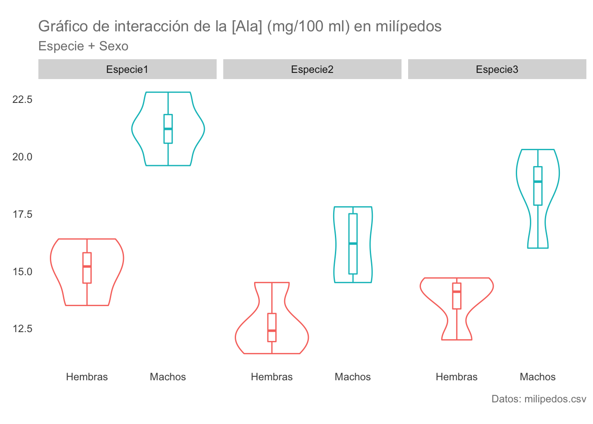 La variable Especie sola
espec.plot <- ggplot(data = mili, aes(x = Especie, y = Ala, color = Especie)) +
geom_violin() + geom_boxplot(width = 0.1) +
blank_theme() +
labs(title = "Gráfico de interacción de la [Ala] (mg/100 ml) en milípedos",
subtitle = "Especie",
x = element_blank(),
y = element_blank(),
caption = "Datos: milipedos.csv")
espec.plot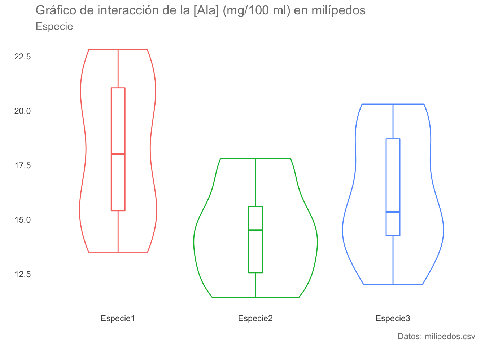 La variable sexo sola
sexos.plot <- ggplot(data = mili, aes(x = Sexo, y = Ala, color = Sexo)) +
geom_violin() + geom_boxplot(width = 0.1) +
blank_theme() +
labs(title = "Gráfico de interacción de la [Ala] (mg/100 ml) en milípedos",
subtitle = "Especie",
x = element_blank(),
y = element_blank(),
caption = "Datos: milipedos.csv")
sexos.plot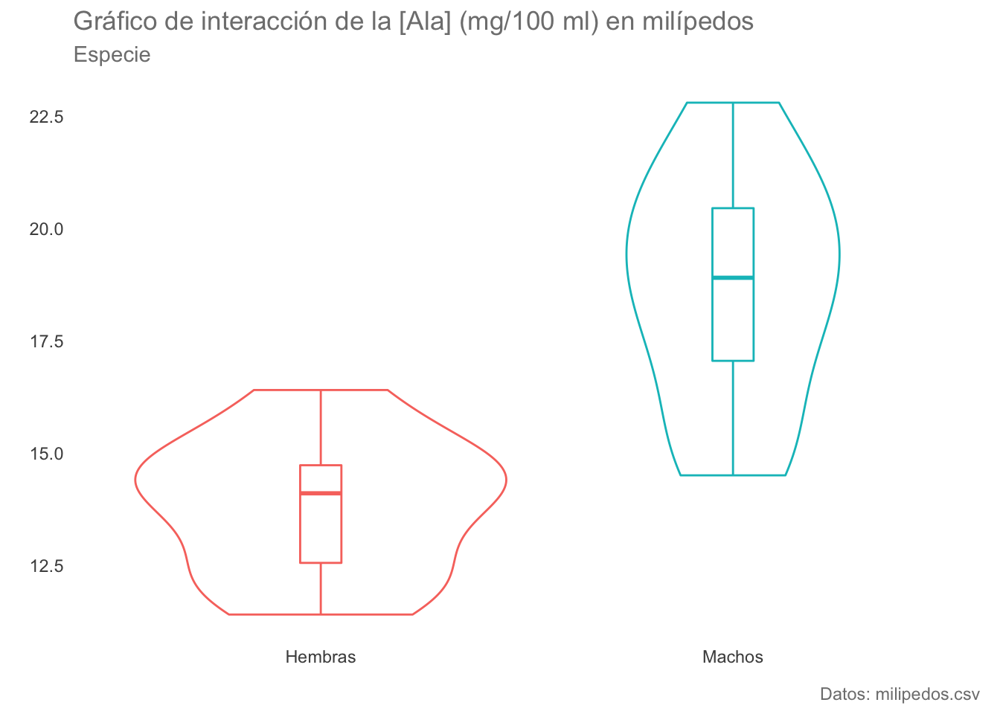
Realizar un ANOVA Scheirer-Ray-Hare con la base de datos strawberry (Horst et al. 2005). Una base de datos multivariada con medidas de peso, % de Botrytis, % de otras epecies fúngicas y una evaluación de Phomopsis en las hojas para 4 tratamientos con 3 réplicas cada uno.
straw <- read.csv("data/strawberry.csv")
head(straw)str(straw)## 'data.frame': 16 obs. of 6 variables:
## $ Tratamiento: int 3 3 3 3 6 6 6 6 8 8 ...
## $ Rep : int 1 2 3 4 1 2 3 4 1 2 ...
## $ Peso : num 6.9 8.3 8.4 7.95 8.6 8.5 8.2 9.5 6.2 9 ...
## $ Botrytis : num 4.1 5.13 6.07 2.72 1.19 ...
## $ Hongos : num 17.24 5.65 8.8 9.51 17.06 ...
## $ Eval : num 1 1 1.5 1.5 1 1 0.5 1 1 3 ...summary(straw)## Tratamiento Rep Peso Botrytis
## Min. :3.00 Min. :1.00 Min. :6.200 Min. : 0.5533
## 1st Qu.:5.25 1st Qu.:1.75 1st Qu.:7.275 1st Qu.: 1.1441
## Median :7.00 Median :2.50 Median :8.250 Median : 3.4065
## Mean :6.50 Mean :2.50 Mean :7.947 Mean : 5.5122
## 3rd Qu.:8.25 3rd Qu.:3.25 3rd Qu.:8.525 3rd Qu.: 7.1228
## Max. :9.00 Max. :4.00 Max. :9.500 Max. :18.3824
## Hongos Eval
## Min. : 1.844 Min. :0.000
## 1st Qu.: 5.637 1st Qu.:1.000
## Median : 9.156 Median :1.000
## Mean : 9.758 Mean :1.375
## 3rd Qu.:13.418 3rd Qu.:1.625
## Max. :17.235 Max. :3.000Hay un par de elementos con los cuales hay que tener cuidado: 1) las variables tratamiento y réplica son variables categóricas y fueron detectadas como variables de enteros, 2) la variable Eval está en escala ordinal no en escala de intervalo o de razón, por lo cual queda automáticamente descartada para pruebas paramétricas. Corrijamos entonces el punto 1:
straw$Tratamiento <- factor(LETTERS[straw$Tratamiento])
straw$Rep <- factor(letters[straw$Rep])
head(straw)head(iris)str(iris)## 'data.frame': 150 obs. of 5 variables:
## $ Sepal.Length: num 5.1 4.9 4.7 4.6 5 5.4 4.6 5 4.4 4.9 ...
## $ Sepal.Width : num 3.5 3 3.2 3.1 3.6 3.9 3.4 3.4 2.9 3.1 ...
## $ Petal.Length: num 1.4 1.4 1.3 1.5 1.4 1.7 1.4 1.5 1.4 1.5 ...
## $ Petal.Width : num 0.2 0.2 0.2 0.2 0.2 0.4 0.3 0.2 0.2 0.1 ...
## $ Species : Factor w/ 3 levels "setosa","versicolor",..: 1 1 1 1 1 1 1 1 1 1 ...summary(iris)## Sepal.Length Sepal.Width Petal.Length Petal.Width
## Min. :4.300 Min. :2.000 Min. :1.000 Min. :0.100
## 1st Qu.:5.100 1st Qu.:2.800 1st Qu.:1.600 1st Qu.:0.300
## Median :5.800 Median :3.000 Median :4.350 Median :1.300
## Mean :5.843 Mean :3.057 Mean :3.758 Mean :1.199
## 3rd Qu.:6.400 3rd Qu.:3.300 3rd Qu.:5.100 3rd Qu.:1.800
## Max. :7.900 Max. :4.400 Max. :6.900 Max. :2.500
## Species
## setosa :50
## versicolor:50
## virginica :50
##
##
## Es una extensión multivariada de la prueba T de Student; por lo tanto, es una prueba paramétrica. Comparemos si las especies versicolor y virginica son iguales. Para ello es importante revisar los supuestos del análisis:
library(MVN)
mvn(iris, subset = "Species", mvnTest = "mardia", desc = F)$multivariateNormality## $setosa
## Test Statistic p value Result
## 1 Mardia Skewness 25.6643445196298 0.177185884467652 YES
## 2 Mardia Kurtosis 1.29499223711605 0.195322907441935 YES
## 3 MVN <NA> <NA> YES
##
## $versicolor
## Test Statistic p value Result
## 1 Mardia Skewness 25.1850115362466 0.194444483140265 YES
## 2 Mardia Kurtosis -0.57186635893429 0.567412516528727 YES
## 3 MVN <NA> <NA> YES
##
## $virginica
## Test Statistic p value Result
## 1 Mardia Skewness 26.2705981752915 0.157059707690356 YES
## 2 Mardia Kurtosis 0.152614173978342 0.878702546726567 YES
## 3 MVN <NA> <NA> YESmvn(iris, subset = "Species", mvnTest = "hz", desc = F)$multivariateNormality## $setosa
## Test HZ p value MVN
## 1 Henze-Zirkler 0.9488453 0.04995356 NO
##
## $versicolor
## Test HZ p value MVN
## 1 Henze-Zirkler 0.8388009 0.2261991 YES
##
## $virginica
## Test HZ p value MVN
## 1 Henze-Zirkler 0.7570095 0.4970237 YESmvn(iris, subset = "Species", mvnTest = "royston", desc = F)$multivariateNormality## $setosa
## Test H p value MVN
## 1 Royston 31.51803 2.187653e-06 NO
##
## $versicolor
## Test H p value MVN
## 1 Royston 7.85262 0.0847746 YES
##
## $virginica
## Test H p value MVN
## 1 Royston 8.141444 0.06776605 YESAl aplicar la prueba global vemos que al parecer no hay diferencias importantes en las dispersiones multivariadas
library(vegan)
dist.mat <- vegdist(iris[,1:4], method = "euclidean", type = c("median"))
groups <- as.character(iris$Species)
disp.mv <- betadisper(dist.mat, group = groups, type = "median") # Realizar el procedimiento
disp.mv##
## Homogeneity of multivariate dispersions
##
## Call: betadisper(d = dist.mat, group = groups, type = "median")
##
## No. of Positive Eigenvalues: 4
## No. of Negative Eigenvalues: 0
##
## Average distance to median:
## setosa versicolor virginica
## 0.4814 0.7057 0.8161
##
## Eigenvalues for PCoA axes:
## PCoA1 PCoA2 PCoA3 PCoA4
## 630.008 36.158 11.653 3.551anova(disp.mv) # Prueba de hipótesisLa prueba post-hoc confirma los resultados
mod.HSD <- TukeyHSD(disp.mv)
mod.HSD <- data.frame(mod.HSD$group, comp = dimnames(mod.HSD$group)[[1]])
mod.HSDExtraemos dos grupos a comparar
versicolor <- subset(iris, (Species == "versicolor"))[,1:4]
virginica <- subset(iris, (Species == "virginica"))[,1:4]
versi.virg <- subset(iris, (Species == "versicolor") | (Species == "virginica"))Aplicamos la prueba:
library(Hotelling)## Loading required package: corpcorhot.t2 <- hotelling.test(x = virginica, y = versicolor)
hot.t2## Test stat: 86.148
## Numerator df: 4
## Denominator df: 95
## P-value: 0Al parecer, los promedios de las mediciones multivariadas son diferentes.
Realizaremos 4 comparaciones univariadas ¿tiene sentido aplicar una corrección de Bonferroni? Algo a notar es que la prueba aplicada en este caso es la prueba de Welch; es decir, una prueba bajo el supuesto de desigualdad de varianzas (muestras heterocedásticas). Para aplicar la prueba T de Student solo hay que agregar el argumento equal.var = TRUE a la función.
t.test(Sepal.Length~Species, versi.virg)##
## Welch Two Sample t-test
##
## data: Sepal.Length by Species
## t = -5.6292, df = 94.025, p-value = 1.866e-07
## alternative hypothesis: true difference in means is not equal to 0
## 95 percent confidence interval:
## -0.8819731 -0.4220269
## sample estimates:
## mean in group versicolor mean in group virginica
## 5.936 6.588t.test(Sepal.Width~Species, versi.virg)##
## Welch Two Sample t-test
##
## data: Sepal.Width by Species
## t = -3.2058, df = 97.927, p-value = 0.001819
## alternative hypothesis: true difference in means is not equal to 0
## 95 percent confidence interval:
## -0.33028364 -0.07771636
## sample estimates:
## mean in group versicolor mean in group virginica
## 2.770 2.974t.test(Petal.Length~Species, versi.virg)##
## Welch Two Sample t-test
##
## data: Petal.Length by Species
## t = -12.604, df = 95.57, p-value < 2.2e-16
## alternative hypothesis: true difference in means is not equal to 0
## 95 percent confidence interval:
## -1.49549 -1.08851
## sample estimates:
## mean in group versicolor mean in group virginica
## 4.260 5.552t.test(Petal.Width~Species, versi.virg)##
## Welch Two Sample t-test
##
## data: Petal.Width by Species
## t = -14.625, df = 89.043, p-value < 2.2e-16
## alternative hypothesis: true difference in means is not equal to 0
## 95 percent confidence interval:
## -0.7951002 -0.6048998
## sample estimates:
## mean in group versicolor mean in group virginica
## 1.326 2.026Extensión Multivariada del Análisis de la Varianza; por lo tanto es el equivalente a una prueba \(T^2\) de Hotelling con más de dos grupos (al igual que el ANOVA con respecto a la prueba t de Student)
Ahora apliquemos la prueba utilizando la función Manova() de la librería car
model <- lm(cbind(Sepal.Length,
Petal.Length,
Sepal.Width,
Petal.Width)~Species, data = iris)
Manova(model, test.statistic = "Wilks")##
## Type II MANOVA Tests: Wilks test statistic
## Df test stat approx F num Df den Df Pr(>F)
## Species 2 0.023439 199.15 8 288 < 2.2e-16 ***
## ---
## Signif. codes: 0 '***' 0.001 '**' 0.01 '*' 0.05 '.' 0.1 ' ' 1# La forma por defecto de R, con la traza de Pillai
res.man <- manova(cbind(Sepal.Length, Petal.Length, Sepal.Width, Petal.Width)~Species, data = iris)
summary(res.man)## Df Pillai approx F num Df den Df Pr(>F)
## Species 2 1.1919 53.466 8 290 < 2.2e-16 ***
## Residuals 147
## ---
## Signif. codes: 0 '***' 0.001 '**' 0.01 '*' 0.05 '.' 0.1 ' ' 1summary.aov(res.man)## Response Sepal.Length :
## Df Sum Sq Mean Sq F value Pr(>F)
## Species 2 63.212 31.606 119.26 < 2.2e-16 ***
## Residuals 147 38.956 0.265
## ---
## Signif. codes: 0 '***' 0.001 '**' 0.01 '*' 0.05 '.' 0.1 ' ' 1
##
## Response Petal.Length :
## Df Sum Sq Mean Sq F value Pr(>F)
## Species 2 437.10 218.551 1180.2 < 2.2e-16 ***
## Residuals 147 27.22 0.185
## ---
## Signif. codes: 0 '***' 0.001 '**' 0.01 '*' 0.05 '.' 0.1 ' ' 1
##
## Response Sepal.Width :
## Df Sum Sq Mean Sq F value Pr(>F)
## Species 2 11.345 5.6725 49.16 < 2.2e-16 ***
## Residuals 147 16.962 0.1154
## ---
## Signif. codes: 0 '***' 0.001 '**' 0.01 '*' 0.05 '.' 0.1 ' ' 1
##
## Response Petal.Width :
## Df Sum Sq Mean Sq F value Pr(>F)
## Species 2 80.413 40.207 960.01 < 2.2e-16 ***
## Residuals 147 6.157 0.042
## ---
## Signif. codes: 0 '***' 0.001 '**' 0.01 '*' 0.05 '.' 0.1 ' ' 1La prueba post-hoc es una prueba HSD de Tukey por cada variable.
TukeyHSD(aov(Sepal.Width~Species, data = iris))## Tukey multiple comparisons of means
## 95% family-wise confidence level
##
## Fit: aov(formula = Sepal.Width ~ Species, data = iris)
##
## $Species
## diff lwr upr p adj
## versicolor-setosa -0.658 -0.81885528 -0.4971447 0.0000000
## virginica-setosa -0.454 -0.61485528 -0.2931447 0.0000000
## virginica-versicolor 0.204 0.04314472 0.3648553 0.0087802Veamos un gráfico de violín para cada variable de cada especie:
library(gridExtra)
sepall.plot <- ggplot(data = iris, aes(x = Species, y = Sepal.Length, colour = Species)) +
geom_violin() +
geom_boxplot(width = 0.1) +
blank_theme(1/1.61) +
labs(title = "Sepal length",
x = element_blank(),
y = element_blank())
sepalw.plot <- ggplot(data = iris, aes(x = Species, y = Sepal.Width, colour = Species)) +
geom_violin() +
geom_boxplot(width = 0.1) +
blank_theme(1/1.61) +
labs(title = "Sepal width",
x = element_blank(),
y = element_blank())
petall.plot <- ggplot(data = iris, aes(x = Species, y = Petal.Length, colour = Species)) +
geom_violin() +
geom_boxplot(width = 0.1) +
blank_theme(1/1.61)+
labs(title = "Petal length",
x = element_blank(),
y = element_blank())
petalw.plot <- ggplot(data = iris, aes(x = Species, y = Petal.Width, colour = Species)) +
geom_violin() +
geom_boxplot(width = 0.1) +
blank_theme(1/1.61)+
labs(title = "Sepal width",
x = element_blank(),
y = element_blank())
grid.arrange(sepall.plot, sepalw.plot, petall.plot, petalw.plot)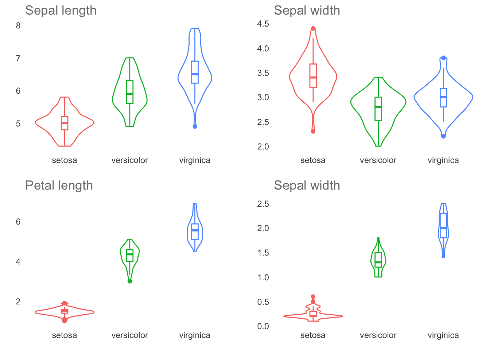
O veamos un gráfico de coordenadas paralelas, el cual nos permite analizar las mediciones de cada variable de cada individuo en un mismo gráfico:
library(GGally)
coord.plot <- ggparcoord(iris,
columns = 1:4,
groupColumn = 5,
showPoints = T,
scale = "std",
order = "anyClass",
alphaLines = 0.5) +
blank_theme(1/1.61) +
labs(title = "Gráfico de coordenadas paralelas",
subtitle = "Valores escalados",
y = element_blank(),
x = element_blank(),
caption = "Datos: Iris")
coord.plot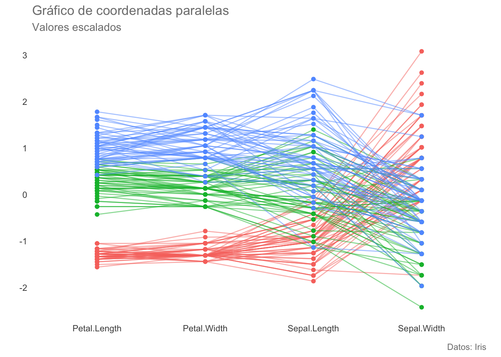
Los pasos a seguir son básicamente los mismos que los que seguimos para realizar la prueba de homogeneidad de matrices de dispersión. Este supuesto es, debido a la aproximación permutacional, (posiblemente) el supuesto más importante para esta prueba. Es importante notar que existe una corrección para grupos con varianzas no homogéneas.
set.seed(1)
n <- 100 # Tamaño de muestra
# Valores observados
tr <- rbinom(100, 1, 0.5) # Distribución binomial con p(éxito) = 50%
y <- 1 + tr + rnorm(n, 0, 3) #Valores de respuesta
s <- sample(tr, length(tr), FALSE) # Muestreo aleatorio sin remplazo
diff(by(y, s, mean)) # Promedio de las diferencias## [1] 1.283456# Permutaciones
dist <- data.frame(f = unname(replicate(2000, diff(by(y, sample(tr, length(tr), FALSE), mean)))))permut.plot <- ggplot(data = dist, aes(f)) +
geom_density(color = "deepskyblue4", fill = "deepskyblue3", alpha = 0.5) +
geom_vline(xintercept = 1.3, colour = rgb(118,78,144, maxColorValue = 255)) +
blank_theme() +
labs(title = "Resultados de un experimento permutacional",
subtitle = "Distribución de las diferencias entre dos grupos",
caption = "Datos simulados",
x = element_blank(),
y = element_blank())
permut.plot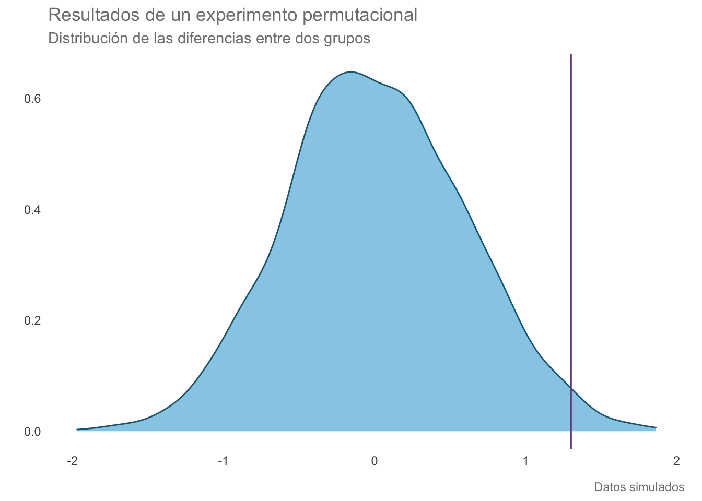
Apliquemos entonces la prueba. Para ello lo primero será calcular la matriz de distancias (de no pasar una matriz de distancias a la prueba hará por default la disimilaridad de Bray-Curtis)
dist.mat <- vegdist(iris[,1:4], method = "euclidean") # Matriz de distancias
grps <- iris[,5] # Es un data.frame que contiene los distintos niveles de agrupamiento, anidados o noAhora podemos aplicar el PERMANOVA. De los resultados podemos observar que la principal división entre especies está dada por la longitud del sépalo, seguida por el ancho. Las cuatro variables explican el 100% del espacio multivariado (\(R^2\) de los residuales = 0). “[…] diferencias significativas en la longitud del sépalo (F(1, 143) = 5.1*10^18; p < 0.001)”
adonis2(dist.mat~iris$Sepal.Length*iris$Sepal.Width+iris$Petal.Length*iris$Petal.Width,
data = grps, permutations = 999)Veamos la dispersión multivariada
plot(betadisper(dist.mat, grps), hull = F, ellipse = T)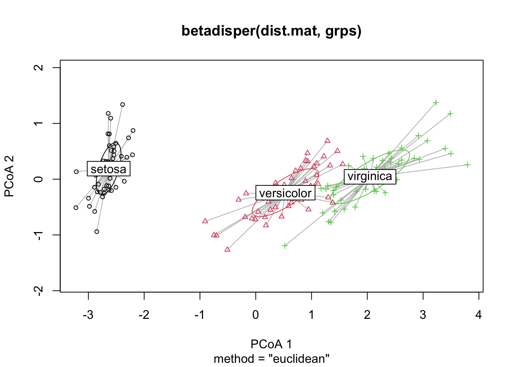
Podemos utilizar también un Escalamiento Multi-Dimensional No Paramétrico. Esta técnica es similar al PCA en el sentido de que proyecta un espacio altamente dimensional a un espacio con menos dimensiones (k), tratando de preservar las distancias entre cada punto. En pocas palabras, es una “hoja” o “lámina” de pocas dimensiones dentro de un espacio altamente dimensional.
iris.mds <- metaMDS(dist.mat, distance = "euclidean", k = 2, trace = F)
mds.dims <- data.frame(NMDS1 = iris.mds$points[,1], NMDS2 = iris.mds$points[,2])
mds.plot.data <- cbind(mds.dims, iris)
# Extraemos las correlaciones de cada factor con cada dimensión reducida (flechas)
fit <- envfit(iris.mds, iris)
arrow <- data.frame(fit$vectors$arrows, R = fit$vectors$r, P = fit$vectors$pvals)
arrow["Variable"] <- rownames(arrow)
arrow.p <-subset(arrow, P <= 0.05)Posteriormente podemos graficarlo. El “estrés” representa la fidelidad con respecto al espacio original; entre más alto sea, mayores serán las deformaciones (menor fue el éxito de preservar las distancias). En general, valores de estrés menores a 0.1 se consideran aceptables, menores a 0.05 como una buena representación y por encima de 0.3 indican una “ordenación” arbitraria. En nuestro gráfico, el estrés de 0.02 indica que la representación es fidedigna, que la mayor división entre especies se da en el eje x (usualmente) y que las variables más relacionadas con esa separación son la longitud y el ancho del pétalo, lo cual corresponde perfectamente con lo encontrado por el PERMANOVA.
mds.plot <- ggplot(mds.plot.data, aes(NMDS1, NMDS2)) +
geom_point(aes(color = Species), alpha = 0.7) +
stat_ellipse(aes(fill = Species), type = "t", size = 1, geom = "polygon", alpha = 0.2) +
labs(title = "Escalamiento Multidimensional no métrico (NMDS)",
subtitle = paste('Estrés =',round(iris.mds$stress,3)),
caption = "Datos: Iris") +
blank_theme() + theme(legend.position = "right") +
geom_segment(data = arrow.p,
aes(x=0, y=0, xend = NMDS1, yend = NMDS2, lty = Variable),
arrow = arrow(length = unit(.2, "cm")*arrow.p$R) #Flechas escaladas según su R^2
)
mds.plot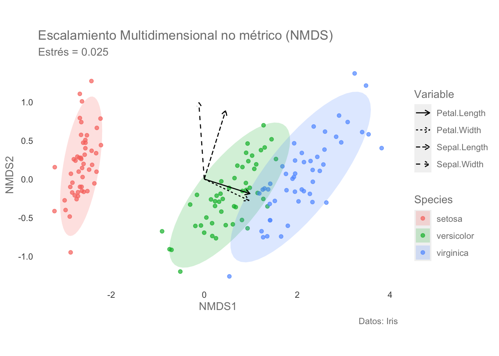